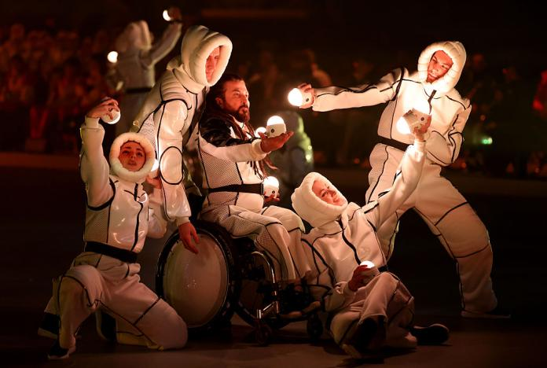
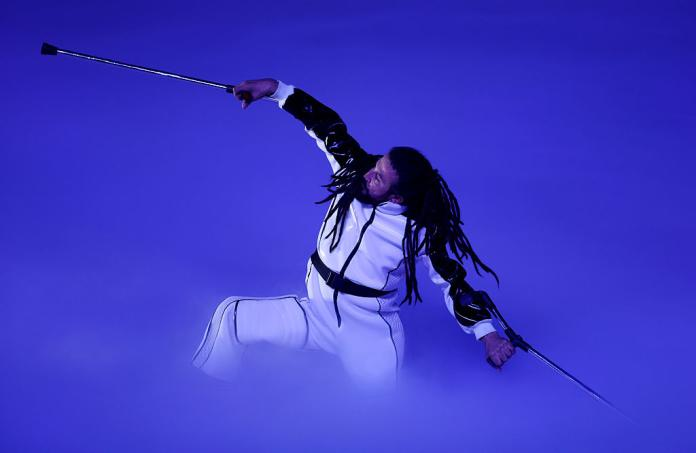
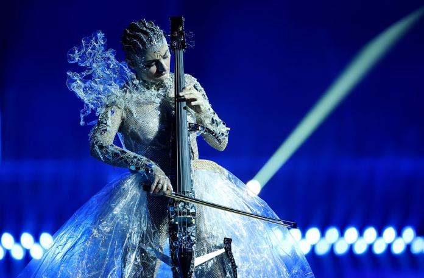
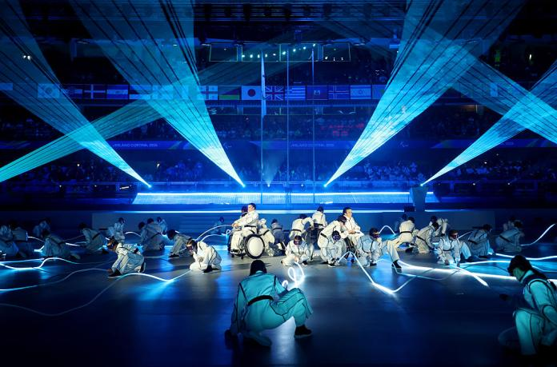
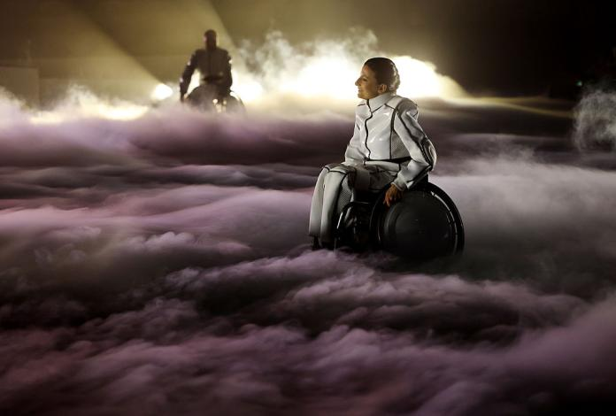
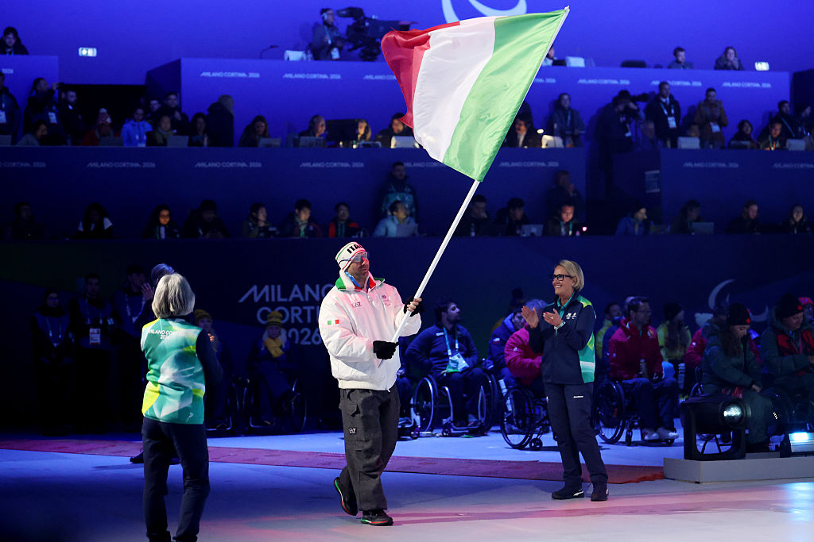
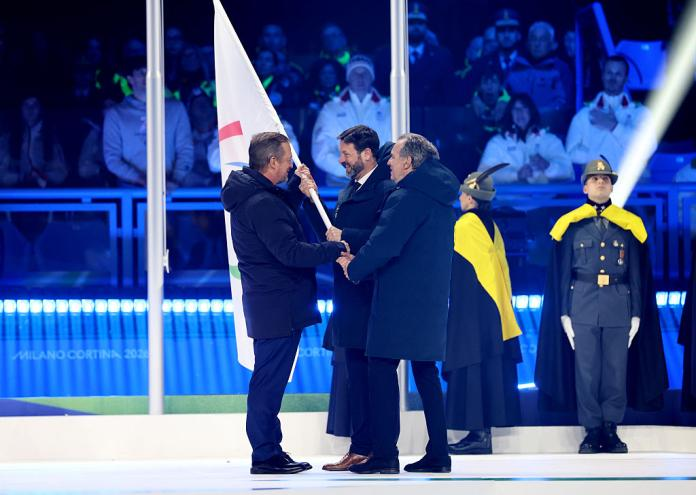

Ceremonies · Milano Cortina 2026 · Paralympic Winter Games
Italian Souvenir
“Italian Souvenir” è stata la Cerimonia di Chiusura dei Giochi Paralimpici Invernali Milano Cortina 2026 — un gran finale di luce, arte e resilienza umana andato in scena al Cortina Curling Olympic Stadium.
Concepito come una cartolina da conservare, lo show ha unito installazioni sceniche mozzafiato, performance dal vivo e musica originale per salutare i Giochi con un messaggio potente: ogni limite può diventare un orizzonte. Prodotto da G2 Eventi (Casta Diva Group) e trasmesso in tutto il mondo.
“Italian Souvenir” was the Closing Ceremony of the Milano Cortina 2026 Paralympic Winter Games — a grand finale of light, art and human resilience staged at the Cortina Curling Olympic Stadium.
Conceived as a keepsake postcard, the show brought together breathtaking scenic installations, live performances and original music to bid farewell to the Games with a powerful message: every limit can become a horizon. Produced by G2 Eventi (Casta Diva Group) and broadcast worldwide.
“Italian Souvenir” a été la Cérémonie de Clôture des Jeux Paralympiques d'Hiver Milano Cortina 2026 — un grand final de lumière, d'art et de résilience humaine au Cortina Curling Olympic Stadium.
Conçu comme une carte postale à conserver, le spectacle a réuni des installations scéniques à couper le souffle, des performances live et une musique originale pour saluer les Jeux avec un message puissant : chaque limite peut devenir un horizon. Produit par G2 Eventi (Casta Diva Group) et retransmis dans le monde entier.
Cristian Taraborrelli
Cristian Taraborrelli ha ricoperto il ruolo di Content Supervisor e Show Caller della cerimonia di chiusura dei Giochi Paralimpici Invernali Milano Cortina 2026, contribuendo alla definizione drammaturgica dello show e guidando l'esecuzione della serata in tempo reale dal Cortina Curling Olympic Stadium.
Il suo contributo scenografico ha dato vita all'elemento più memorabile e iconico della cerimonia: la Boule de Neige — una sfera scenica luminosa di proporzioni monumentali che racchiude al suo interno il Duomo di Milano e le Dolomiti. Quando Sofia, la bambina protagonista, si avvicina alla sfera e soffia sulla fiamma paralimpica, l'arena trattiene il respiro. Un'opera di luce, memoria ed emozione condivisa che ha incantato il pubblico di tutto il mondo.
Cristian Taraborrelli served as Content Supervisor and Show Caller for the Closing Ceremony of the Milano Cortina 2026 Paralympic Winter Games, shaping the show's dramaturgy and directing the live execution in real time from the Cortina Curling Olympic Stadium.
His scenic contribution gave life to the ceremony's most memorable and iconic element: the Boule de Neige — a monumental luminous scenic sphere enclosing Milan's Duomo and the Dolomites within. When Sofia, the young protagonist, approaches the sphere and blows out the Paralympic flame, the arena holds its breath. A work of light, memory and shared emotion that enchanted audiences worldwide.
Cristian Taraborrelli a occupé le rôle de Content Supervisor et Show Caller de la cérémonie de clôture des Jeux Paralympiques d'Hiver Milano Cortina 2026, contribuant à la dramaturgie du spectacle et dirigeant son exécution en direct depuis le Cortina Curling Olympic Stadium.
Sa contribution scénographique a donné vie à l'élément le plus mémorable et emblématique de la cérémonie : la Boule de Neige — une sphère scénique lumineuse de proportions monumentales renfermant le Dôme de Milan et les Dolomites. Lorsque Sofia, la jeune protagoniste, s'approche de la sphère et souffle sur la flamme paralympique, l'arène retient son souffle. Une œuvre de lumière, de mémoire et d'émotion partagée qui a enchanté le public du monde entier.
Concept narrativo · Angelo Bonello & Francesco Paolo Conticello
I
The Opening
Dergin Tokmak, performer del Cirque du Soleil, apre con un assolo che racconta in forma scenica l'essenza dello spirito paralimpico. Stampelle luminose, danza e luce disegnano simboli di sport e inclusione.
II
Heritage
Il violoncello di Formisanoff guida il pubblico attraverso le Dolomiti. La coreografia di Thomas Signorelli dissolve i corpi in figure caleidoscopiche. Giorgia Greco, ginnasta ritmica, è il simbolo vivente dei Giochi.
III
Souvenir
La Boule de Neige scenografica di Cristian Taraborrelli — il Duomo di Milano e le Dolomiti in un'unica sfera luminosa. Planet Funk chiude i Giochi in musica e luce.
Creative Team
Artists
Performer · Cirque du Soleil
Dergin Tokmak
Vocalist
Arisa
Cellist & Composer
Formisanoff
Rhythmic Gymnast
Giorgia Greco
Live Concert
Planet Funk
Press
"Un'esplosione di luce e arte per il saluto finale ai Giochi Invernali di Milano Cortina 2026. Una cerimonia che ha incantato il mondo."
ADC Group · e20express · 15 Marzo 2026
Leggi l'articolo ↗"La fiamma di Milano Cortina 2026 ha brillato come un faro di unità in un mondo minacciato dall'oscurità e dalle divisioni."
Giovanni Malagò · Presidente, Fondazione Milano Cortina 2026
Gallery







Photo credits: © IPC / Paralympic.org — Getty Images / Mattia Ozbot — EPA / Claudio Thoma
Tags